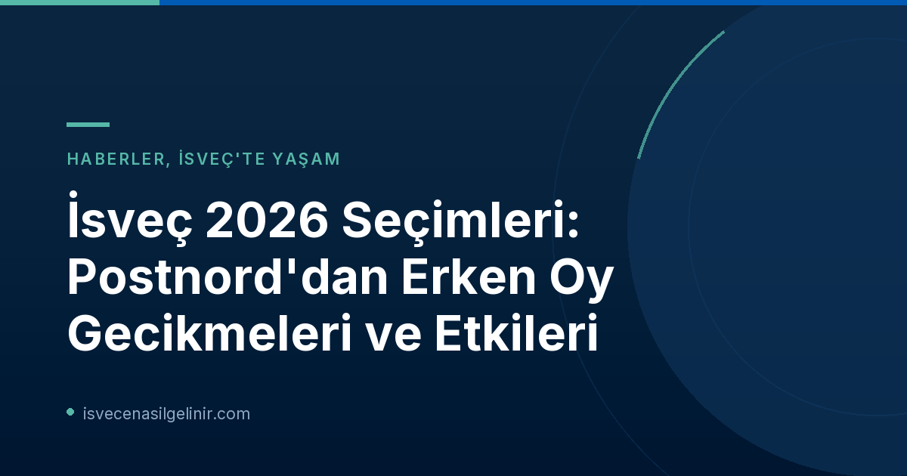

Postnord Neden Erken Oyları Geciktirdi?
2026 İsveç seçimlerinde, Postnord, rekor düzeyde erken oy kullanımı nedeniyle teslimatlarda ciddi aksaklıklar yaşadı. Özellikle Stockholm bölgesinde, sabah 08:00'de teslim edilmesi gereken oylar öğle saatlerine kadar gecikmeli olarak ulaştı. Postnord basın sözcüsü Anders Porelius, yaşanan bu yoğunluğun teslimat süreçlerini zorlaştırdığını belirtti. Seçmenlerin yüksek katılım göstermesinin memnuniyet verici olduğunu ancak bunun da beraberinde lojistik zorluklar getirdiğini dile getirdi.
Erken Oy İstatistikleri
- Toplam Erken Oy Kullanımı: 3.6 milyon kişi
- Gecikmeden Etkilenen Bölge: Başta Stockholm olmak üzere bazı komünler
- Teslimat Süresi: Normalde sabah 08:00, ancak öğle saatlerine kadar gecikmeler yaşandı.
Gecikmelerin Oy Sayım Sürecine Etkisi
İsveç Seçim Otoritesi (Valmyndigheten), Postnord'daki gecikmelerin oy sayım sürecini olumsuz etkileyebileceğini doğruladı. Kurumun basın sorumlusu Jenny Stad, bu durumun oy sayım görevlilerinin oyları incelemesi için ayrılan süreyi kısaltacağını ve sayım sürecinin uzamasına neden olabileceğini ifade etti. Valmyndigheten, gecikmelerle ilgili olarak Postnord ile temas halinde olduklarını bildirdi ve durumu "iyi değil" olarak nitelendirdi.
Seçmenler İçin Ne Anlama Geliyor?
Yaşanan erken oy teslimat gecikmeleri, seçmenlerin oy kullanma haklarını etkilemiyor. İsveç'teki seçim kurallarına göre, erken oy kullanan bir seçmen, seçim günü tekrar sandık başına gidip oy kullanma hakkına sahiptir. Bu durumda, seçim günü kullanılan oy geçerli sayılırken, daha önce kullanılan erken oy geçersiz hale gelmektedir. Bu mekanizma, Anna Nyqvist (Valmyndigheten kansli müdürü) tarafından da teyit edilmiştir.
Seçim Gününde Sandık Başı Kuyrukları ve Valmyndigheten'in Uyarıları
Postnord'daki gecikmelerin yanı sıra, Seçim Otoritesi, seçmenleri seçim günü sandık başlarında oluşabilecek kuyruklara karşı da uyardı. 2022 yılındaki bir önceki seçimde, ülkenin birçok yerinde sandıkların kapanış saati olan 20:00'den sonra bile seçmenlerin kuyrukta beklemeye devam ettiği görülmüştü. Valmyndigheten, "Sandık kapanmadan önce sıraya giren herkesin oy kullanma hakkı vardır," açıklamasında bulunsa da, olası gecikmeleri önlemek adına erken saatlerde oy kullanılmasını tavsiye etti.
Kurum, Myndigheten för civilt försvar (Sivil Savunma Ajansı) ile birlikte kuyruk yönetimi konusunda eğitimler verdiğini ve bu sorumluluğun yerel belediyelerde olduğunu belirtti. İsveç'in demokratik sürecinde aktif rol almak isteyenler için sverigemedborgarskapsprov.com adresi, vatandaşlık sınavına hazırlık konusunda önemli bir kaynak sunmaktadır.
| Öğe | Açıklama |
|---|---|
| Erken Oy Değiştirme | Seçim günü tekrar oy kullanılırsa, erken oy geçersiz olur, seçim günü oyu geçerli sayılır. |
| Kuyruk Garantisi | Sandık kapanış saati (20:00) öncesinde sıraya giren herkes oy kullanma hakkına sahiptir. |
| Tavsiye | Olası kuyrukları önlemek için seçim günü erken saatlerde oy kullanılması önerilmektedir. |
Özet ve Tavsiyeler
2026 İsveç seçimleri, erken oy teslimatlarındaki gecikmeler ve sandık başlarında yaşanabilecek kuyruk potansiyeli ile gündemde. Valmyndigheten ve Postnord, süreçleri hızlandırmak için çalışsa da, seçmenlerin bu durumu göz önünde bulundurarak seçim gününe hazırlanmaları önem taşıyor. Oy kullanma hakkınızı gecikmelerin etkilemediğini ve isterseniz erken oyunuzu seçim günü değiştirebileceğinizi unutmayın. Demokratik katılımcılığın yüksek olması sevindirici bir durum olsa da, bu tür lojistik aksaklıklar, seçim süreçlerinin daha sağlam bir şekilde planlanması gerektiğinin altını çiziyor.
İsveç Seçim Süreci ve Vatandaşlık Hakkında Daha Fazla Bilgi Edinin!
İsveç'te yaşam ve vatandaşlık süreçleri hakkında merak ettikleriniz mi var? Geniş bilgi kaynaklarımız ve uzman görüşlerimizle sorularınızı yanıtlıyoruz.